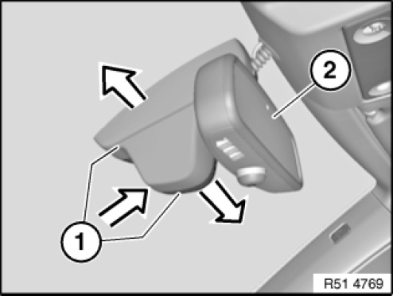
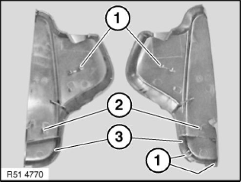
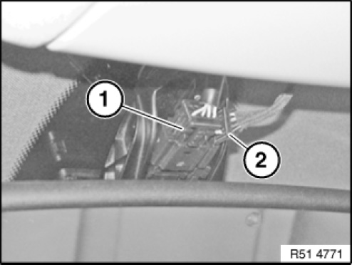
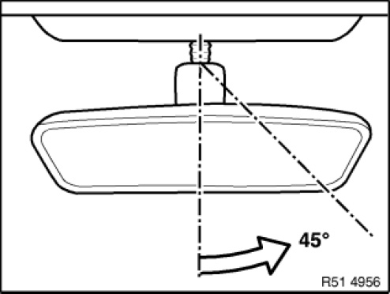
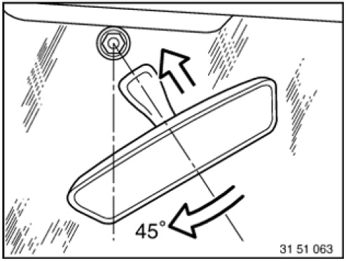
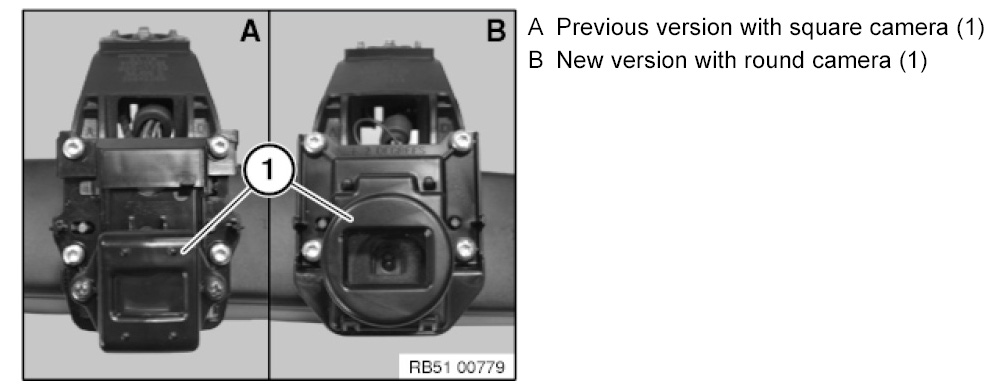
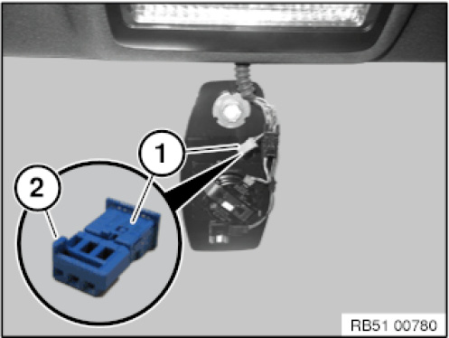

51 16 060 Removing and Installing or Replacing Inside Mirror
51 16 060 Removing and installing/replacing inside mirror (with high-beam assistant)

IMPORTANT:
Work may only be carried out at a room/object temperature of 18 ... 28 ° C.
If this can not be guaranteed (cold/hot countries), it is necessary to equalize the temperature of the windscreen, mirror base and inside mirror (e.g. vehicle left to stand indoors or in the shade for at least 30 minutes).

Version with remote key for central locking system:
If necessary, disconnect negative lead from battery.
IMPORTANT:
To avoid windscreen breakage:
Screw inside mirror off mirror mount.
Inside mirror must not be pulled or pressed off towards front or rear.

Press on end caps (1) and at same time pull them apart; this releases clip connection of both caps (1).
Twist inside mirror (2) and detach end caps (1) from inside mirror and feed out.

Installation note:
Retaining hooks (1 and 2) of end caps (3) must not be damaged.

Disconnect plug connections (1 and 2).
Installation note:
If necessary, pay attention to cable routing for rain sensor.

IMPORTANT: Do not pull or press inside mirror off towards front or rear.
Twist mirror base approx. 45° to right until mirror base is released from mirror mount.

Installation note:
1. Twist mirror foot by approx. 45° and fit to mirror base .
2. Turn mirror foot until it can be felt to engage on mirror base.
3. Visually inspect for positive locking.

NOTE: Normalization or initialization is not necessary.
High-Beam Assistant is automatically aligned under the following conditions:
- Driving on a motorway/ordinary road at night for approx. 50 km and
- Clearly visible road markings
In the event of a malfunction, observe notes and instructions on diagnosis.
For further information on Autobeam, refer to SBT Autobeam.
Only replace with version with remote key for central locking system:
If necessary, initialize all transmitters (ignition keys), refer to Owner's Handbook.

Replacement (only E70, E71, E72):
When installing an inside mirror with a new version the wiring harness on the vehicle must be adjusted if necessary.
A new inside mirror version must only be installed with the relevant end caps.

For vehicles with a blue connector (1) and installation of inside mirror with new version, the mechanical coding (2) must be removed.